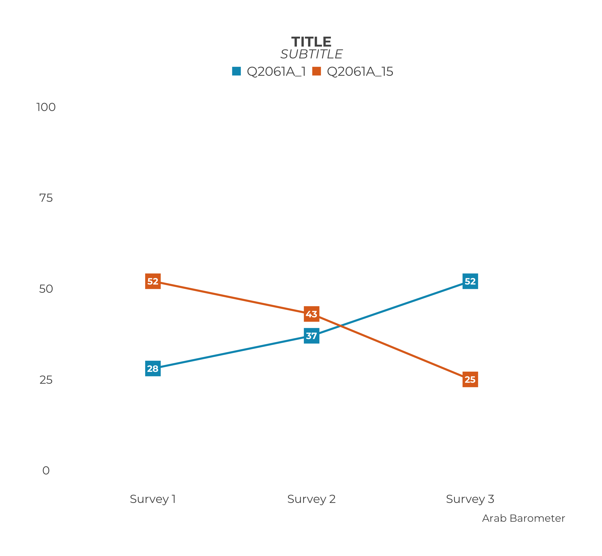
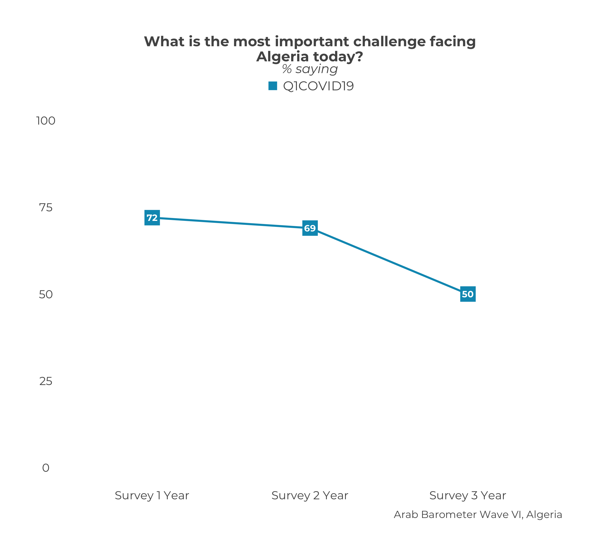
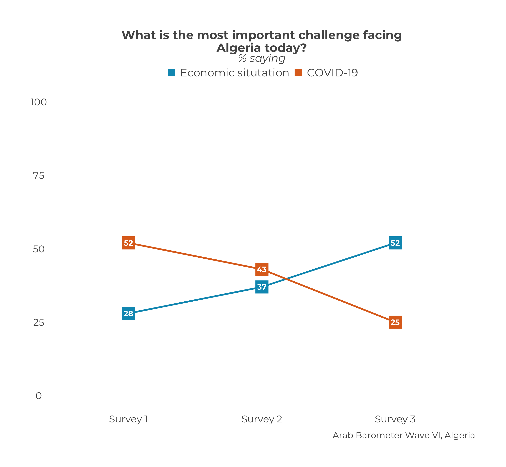
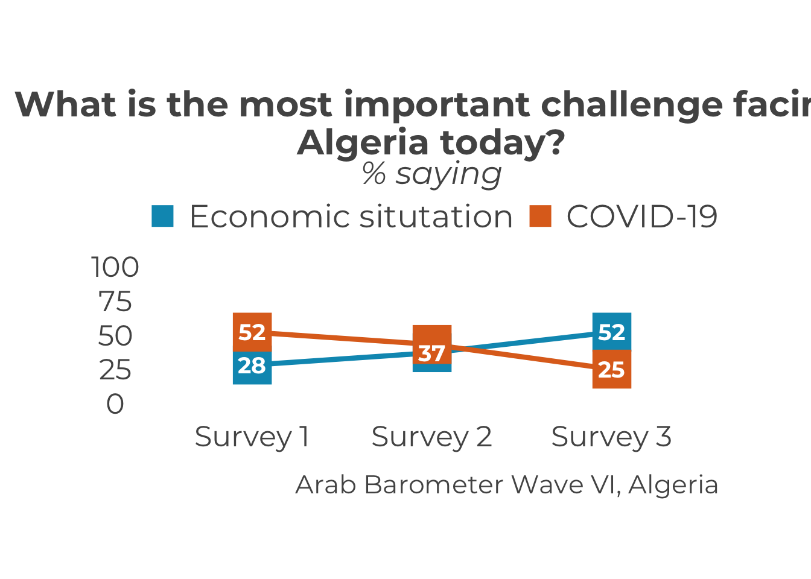

Chapter 14 Single Country Multi-Question Trend Plots
TL;DR
At the end, your code will look like the following:
questions_2_compare <- c("Q2061A_1",
"Q2061A_15")
question_labels <- c("Economic situtation",
"COVID-19")
df_list <- list(survey1,
survey2,
survey3)
ab_survey_dates <- c("Survey 1",
"Survey 2",
"Survey 3")
calculate_ind_trend_multiq(questions_2_compare,
df_list,
ab_survey_dates,
"Algeria") |>
plot_ind_trend_multiq(.title = "What is the most important challenge facing Algeria today?",
.subtitle = "% saying",
.caption = "Arab Barometer Wave VI, Algeria",
legend_names = question_labels)That code will produce the following graph:

Let’s go!
14.1 Prep Work
Since we are creating both a trend graph and a graph that displays multiple questions, it should hopefully make sense that the suggested prep work is a combination of the suggested prep work for multi-question graphs and the prep work suggested for creating a trend graph for a single country.
14.1.1 Question Vector
First create a vector of questions you want to include on your graph. For the example in this chapter we are comparing questions Q2061A_1 and Q2061A_15. We put the names of those variables in a vector and save that vector as an object.
Now the variables we want to graph as saved to the object questions_2_compare in a vector.
14.1.2 Question Labels
The next step is to create a vector of labels for the questions. This is the text that will display on the y-axis. The labels should appear in the same order as they variables they are referring to.
The object question_labels represents the text that will serve to label the responses on the graph.
14.1.3 Create a Data Frame List
The first step is to create a list of data frames. This section is exactly the same as the one from here.
There should be one data frame for each period you wish to graph. That is, each data frame should be from a different survey you want to include in your graph. In the example for the chapter, we’re using the three surveys from Wave VI, which we call survey1, survey2, and survey3. Each survey is its own data frame.
The list of data frames should be in the order you want them to appear (ideally, chronologically). The data on the graph will show up in the order of the list. So if you create a list in the order list(survey2, survey1, survey3), the data from survey2 will show up before the data from survey1.
Please note: This is ambivalent to language! The plot_ind_trend_multiq() function will assume the order of the list is the correct order, and treat it accordingly. When you enter a list as list(survey1, survey2, surveye3), the English graph will show the data right to left (survey 1 -> survey 2 -> survey 3), while the Arabic graph will show the data left to right (survey 3 <- survey 2 <- survey 1). You do not need to alter your input.
The data frame lists in the
Wave8TrendDatapackage do this step for you.
14.1.4 Create a Date Vector
This section is exactly the same as the one from here.
The next step is to create a vector of the dates you want to show on the x-axis of your graph. Branding guidelines call for the years in which the survey took place. For simplicity in the example, let’s just say "Survey X Year".
You need a date for each data frame in your data frame list. Otherwise, the function won’t know how to label the x-axis.
The dates should also be in the order you want them to appear. The dates should line up with the data frames. In the chapter example, the order of the data frames is survey 1, survey 2, survey 3. Therefore, the survey dates need to have the order survey 1 year, survey 2 year, survey 3 year.
Please note: This is ambivalent to language! Just as with the data frame list, the plot_ind_trend_multiq() function will put the data in the correct order according to the language of the graph.
Now that we have defined our data frame list and survey dates, we can create our multi-question trend plot.
The date vectors in the
Wave8TrendDatapackage do this step for you.
14.2 Create a Summary
To create a multiquestion trend summary for an individual country, use the calculate_ind_trend_multiq() function.
This function takes a few more parameters, and in a different order, than the functions we have worked with so far. In total, there are four necessary parameters: ab_var_list, ab_df_list, ab_survey_dates, and select_country. To see a complete list of parameters, including optional ones, use ?calculate_ind_trend_multiq() in your R console.
The parameter ab_var_list are the variables you want to plot. This is what we created here. They must have the same name in every data frame in the data frame list. If one of the variables you want to plot is named "Q101" in one sure, but "Q102" in another, the function will not include "Q102" in the plot. Computers can do a lot but as of yet they cannot think critically, so the onus is on you.
The trend data lists from the
Wave8TrendDatapackage ensure this is true for Wave VIII variables.
The parameter ab_df_list is a list of data frames. This is what we created here.
The parameter ab_survey_dates is a character vector of dates that will show up on the x-axis of the graph. This is what we created here.
The parameter select_country is the name of the country you want to create the graph for.
Now let’s fill it in.
calculate_ind_trend_multiq(
ab_var_list = questions_2_compare, # Variable to graph
ab_df_list = df_list, # List of data frames
ab_survey_dates = ab_survey_dates, # Vector of survey dates
select_country = "Algeria" # Country to graph
)The output should look like the following, with the Survey column labeled.
| Survey | Question | Country | Percent |
|---|---|---|---|
| 1 | Q2061A_1 | Algeria | 28 |
| 2 | Q2061A_1 | Algeria | 37 |
| 3 | Q2061A_1 | Algeria | 52 |
| 1 | Q2061A_15 | Algeria | 52 |
| 2 | Q2061A_15 | Algeria | 43 |
| 3 | Q2061A_15 | Algeria | 25 |
We can see the resulting data frame has six rows; one for each question in each survey we are plotting. Let’s save the output as an object so we can plot that object in the next section.
14.3 Plot the Summary
The next step is to plot the summary we just created. To do that, we use the function plot_ind_trend_multiq().
This function only requires one argument: ab_summary. Like many other graphs, we’ll want to add a bit later on. To see a complete list of parameters, including optional ones, use ?plot_ind_trend_multiq() in your R console. For now, let’s see what happens when we just supply our summary we saved as individual_multiq_trend_summary.
plot_ind_trend_multiq(
ab_summary = individual_multiq_trend_summary
)
#> Warning in title_function(.var = "multiquestion graphs", .title = .title, : ✖ There is currently no title for `multiquestion graphs`.
#> ℹ Please specify your own until this has been corrected.
#> Warning in subtitle_function(.var = "multiquestion graphs", .subtitle = .subtitle, : ✖ There is currently no subtitle for `multiquestion graphs`.
#> ℹ Please specify your own until this has been corrected.
Nearly there! What still needs to be changed?
…Quite a lot, actually.
Glaringly, we need a title, subtitle, caption, and legend labels.
To provide the title, subtitle, and caption, we’ll use the same parameters that are present in all plot_ functions: .title, .subtitle, and .caption.
plot_ind_trend_multiq(
ab_summary = individual_trend_summary,
.title = "What is the most important challenge facing Algeria today?",
.subtitle = "% saying",
.caption = "Arab Barometer Wave VI, Algeria"
)
This might be enough for internal AB use, but if we plan on sharing our graphs, it is prudent to add widely understandable labels to the legend.
Luckily, we prepped for this earlier when we created the object question_labels. Now we just need to tell plot_ind_trend_multiq() to use these labels for the legend. We do that with the parameter legend_names.
plot_ind_trend_multiq(
ab_summary = individual_trend_summary,
.title = "What is the most important challenge facing Algeria today?",
.subtitle = "% saying",
.caption = "Arab Barometer Wave VI, Algeria",
legend_names = question_labels
)
#> Warning in plot_ind_trend_multiq(ab_summary = individual_trend_summary, : ✖ Incorrect number of labels for legend.
#> ℹ You have provided either too many or too few legend names. What you have provided will be ignored.Ta-da! Putting this all together, we have our original code and graph.
questions_2_compare <- c("Q2061A_1",
"Q2061A_15")
question_labels <- c("Economic situtation",
"COVID-19")
df_list <- list(survey1,
survey2,
survey3)
ab_survey_dates <- c("Survey 1",
"Survey 2",
"Survey 3")
calculate_ind_trend_multiq(questions_2_compare,
df_list,
ab_survey_dates,
"Algeria") |>
plot_ind_trend_multiq(.title = "What is the most important challenge facing Algeria today?",
.subtitle = "% saying",
.caption = "Arab Barometer Wave VI, Algeria",
legend_names = question_labels)
14.4 Extras
14.4.1 Human Readable
If you just want to look at the summaries and not necessarily create a plot, the output of calculate_ind_trend_multiq() might not be the easiest to understand from a glance. There is a parameter called human_readable that is designed to help with that.
By default, human_readable is set to FALSE and each row is unique to the survey-question. If human_readable is set to TRUE, each is unique to a survey and there are columns for each question.
calculate_ind_trend_multiq(
ab_var_list = questions_2_compare,
ab_df_list = df_list,
ab_survey_dates = ab_survey_dates,
select_country = "Algeria",
human_readable = FALSE # This is the default
)| Survey | Question | Country | Percent |
|---|---|---|---|
| 1 | Q2061A_1 | Algeria | 28 |
| 2 | Q2061A_1 | Algeria | 37 |
| 3 | Q2061A_1 | Algeria | 52 |
| 1 | Q2061A_15 | Algeria | 52 |
| 2 | Q2061A_15 | Algeria | 43 |
| 3 | Q2061A_15 | Algeria | 25 |
calculate_ind_trend_multiq(
ab_var_list = questions_2_compare,
ab_df_list = df_list,
ab_survey_dates = ab_survey_dates,
select_country = "Algeria",
human_readable = TRUE # This is NOT the default
)| Survey | Country | Q2061A_1 | Q2061A_15 |
|---|---|---|---|
| 1 | Algeria | 28 | 52 |
| 2 | Algeria | 37 | 43 |
| 3 | Algeria | 52 | 25 |
The default is set to FALSE because that is the structure plot_ind_trend_multiq() expects. If you set human_readable to TRUE and use that output in plot_ind_trend_multiq(), you will get an error.
14.4.2 Legend Names
Legend names can be included either in calculate_ind_trend_multiq() or plot_ind_trend_multiq(). The parameter in both functions is called legend_names. If you include legend_names in calculate_ind_trend_multiq(), you do not need to include legend_names in plot_ind_trend_multiq(). This chapter presents adding legend_names with the plotting function because the author thought readers would find that more intuitive.
The code below shows that setting the parameter legend_names in either the calculate_ind_trend_multiq() or plot_ind_trend_multiq() produces the same result.
calculate_ind_trend_multiq(
questions_2_compare,
df_list,
ab_survey_dates,
"Algeria"
) |>
plot_ind_trend_multiq(
.title = "What is the most important challenge facing Algeria today?",
.subtitle = "% saying",
.caption = "Arab Barometer Wave VI, Algeria",
legend_names = question_labels # Adding labels during the plotting phase
)
calculate_ind_trend_multiq(
questions_2_compare,
df_list,
ab_survey_dates,
"Algeria",
legend_names = question_labels # Adding labels during the calculate phase
) |>
plot_ind_trend_multiq(
.title = "What is the most important challenge facing Algeria today?",
.subtitle = "% saying",
.caption = "Arab Barometer Wave VI, Algeria"
)
14.4.3 Font Size
The font size default brand size is used for the graph text. You can learn how to change that in the chapter on changing the font size.
14.4.4 Colors
You can learn how to change the colors for the single country trend graph in the chapter on changing graph colors.